Dots & CloudsSupport
Something not working, or an idea? Open an issue on GitHub and I’ll get back to you.
Where is the app?
Dots & Clouds lives at the top of your screen and in the menu bar, not in the Dock. The dots sit just below the menu bar, in the middle. The menu bar icon has About, Choose Dots, Show Welcome, Always Dark Mode and Quit.
Shortcuts
Each dot opens from any app with Control-Shift and its number: ⌃⇧1 Blob camera, ⌃⇧2 Tasks, ⌃⇧3 Draw on screen, ⌃⇧4 Timer, ⌃⇧5 Clipboard. Esc closes Tasks, the pen and the clipboard.
Adding or removing dots
Click the + at the end of the bar, or choose Choose Dots in the menu bar menu, and turn each tool on or off.
The camera shows a message instead of video
Allow the camera in System Settings › Privacy & Security › Camera, then open the camera dot again.
The clipboard doesn’t record copies
macOS asks before an app reads what other apps copy. Set Dots & Clouds to Always Allow in System Settings › Privacy & Security › Paste from Other Apps.
Setting a timer
Hover the time above the die for −1 and +1 minute, reset, and ✕ to put it away, or click the time and type one: 10s, 2m or 1:30. Click the die to start or pause.
Requirements
macOS 14 Sonoma or later.